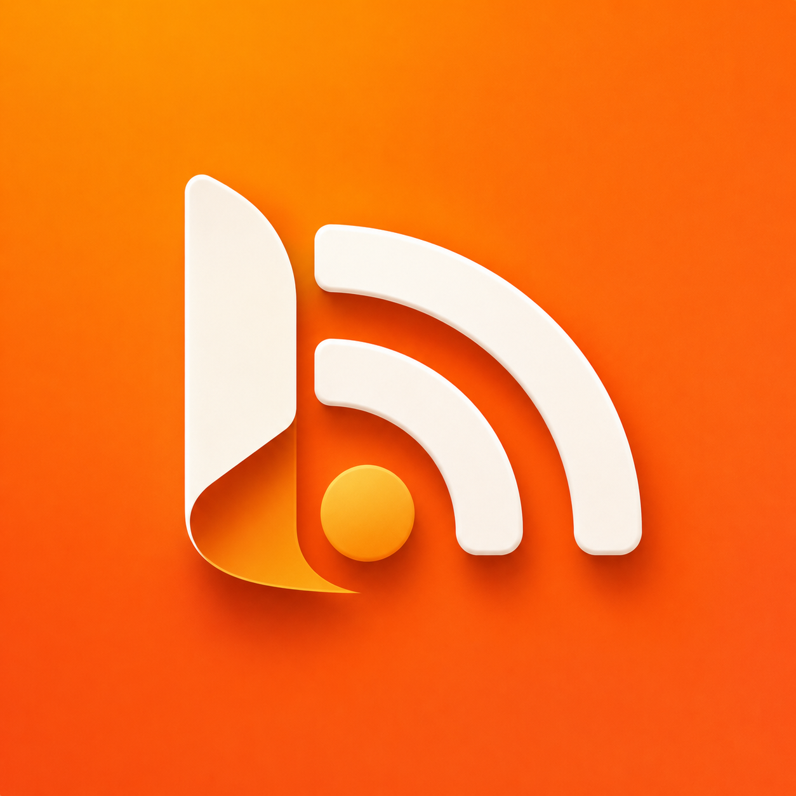

Last updated: October 17, 2026
RSS Reader is designed with a privacy-first approach. We believe your reading habits should remain private. This policy explains what the app stores, what it sends, and to whom.
We do not collect any personal information, and we have no servers that receive data from the app. There are no accounts, no advertising, and no third-party analytics or tracking. Your subscriptions, reading history, highlights, notes, tags, rules, and settings are stored on your device, and only in your own private iCloud account if you turn on iCloud Sync.
To show your feeds, the app connects directly to the websites that publish them. Depending on what you use, it also contacts those websites to download a story's full text, its images, and the site's icon. Like any web request, these connections reveal your IP address and the app's name and version to the website. We recommend reviewing the privacy policies of the websites you subscribe to.
If you sign in to an RSS service in Settings > RSS Service (such as Feedbin, FreshRSS, Miniflux, or a Fever-compatible server), the app sends that service your username and password to sign in, the list of feeds you follow, and which stories you have read or starred, so they stay the same in your other apps. This goes only to the service you chose, under its own privacy policy, and never to us. Your password is stored in your device's Keychain. Signing out stops all of this.
When you import a Pocket or Instapaper export, the file is read on your device; nothing is sent anywhere.
AI summaries and daily briefings use Apple Intelligence on your device. Translation uses Apple's on-device translation. Finding related stories, ad filtering, and your rules all run on your device. The text of your stories is not sent to us or to any AI service.
The camera is used only to scan a QR code containing a feed address, and nothing is recorded or stored. The app adds an image to your photo library only when you choose to save a quote card.
If you turn it on, your feeds, reading state, highlights, tags, and rules are synced through your private iCloud database. This data is stored by Apple in your iCloud account and is not accessible to us. You can remove it at any time in Settings > iCloud Sync.
RSS Reader does not knowingly collect information from anyone, including children.
If this policy changes, the updated version will be posted on this page with a new date.
If you have any questions about this Privacy Policy, you can contact us through our Support Page.